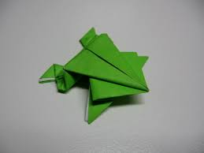
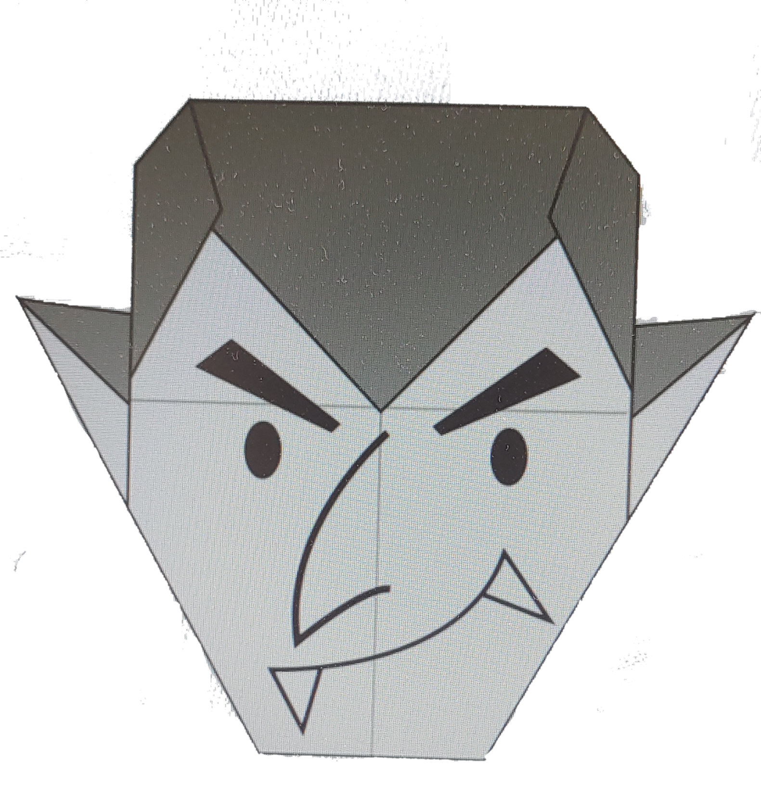
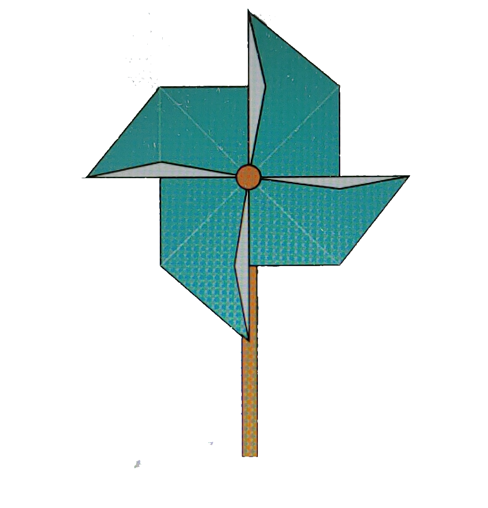

HOW TO DO DIFFERENT ORAGAMI CRAFTS
getting bored??
Here are some cool oragami you can make at home
A TEDDY BEAR

click on the image to see the steps for making it
Funfacts about teddy bear
Teddy bears got their name from the story that Teddy Roosevelt refused to shoot a bear cub while on a hunting trip in 1902.
A TEDDY BEAR
click on the image to see the steps for making it
Funfacts about teddy bear
A CHUBY PANDA

click on the image to see the steps for making it
Funfacts about panda
A CUTE PIGEON

click on the image to see the steps for making it
Funfacts about pigeons
A JUMPING FROG
click on the image to see the steps for making it
Funfacts about frogs
A TERRIFYING DRACULA
click on the image to see the steps for making it
Funfacts about dracula
A FUN PINWHEEL
click on the image to see the steps for making it
Funfacts about pinwheel